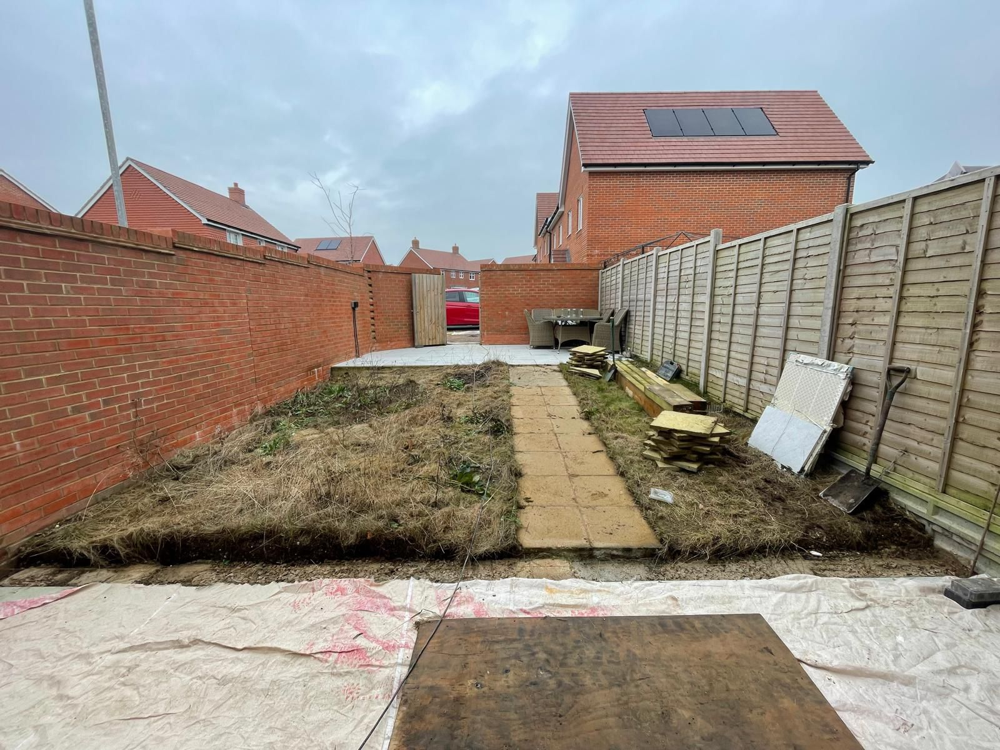
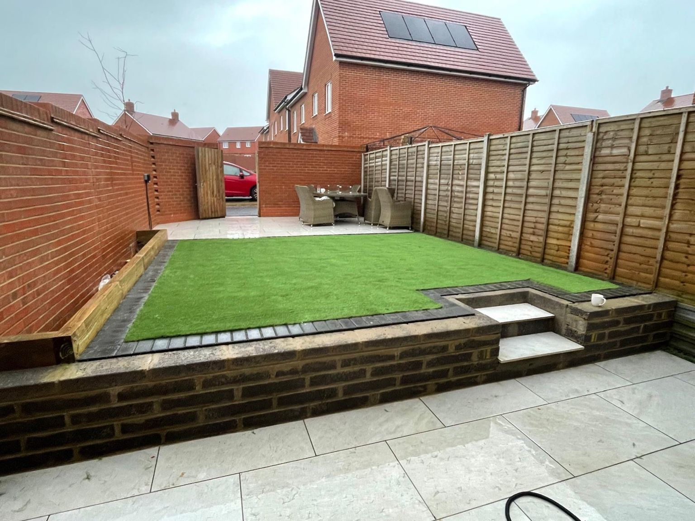
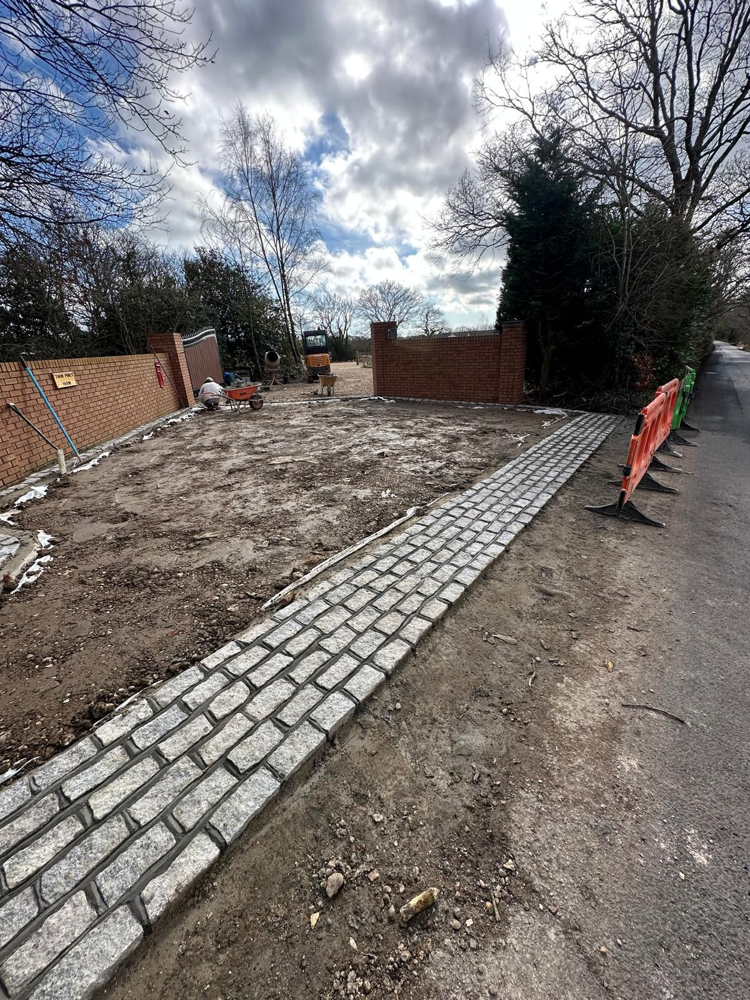
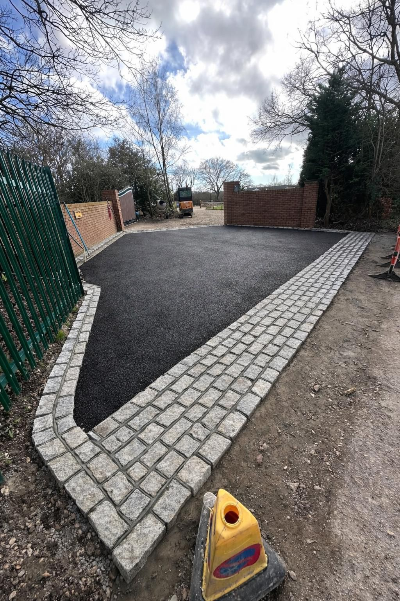
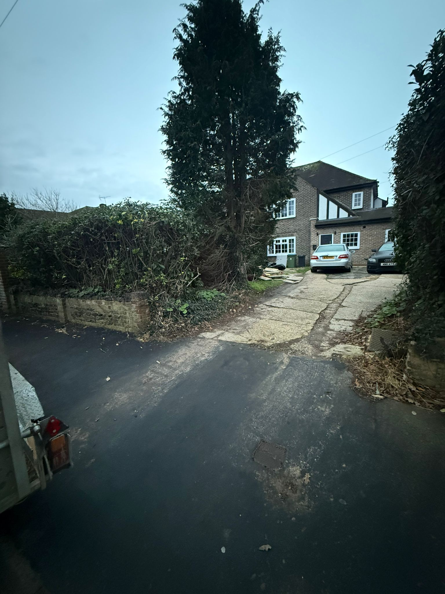
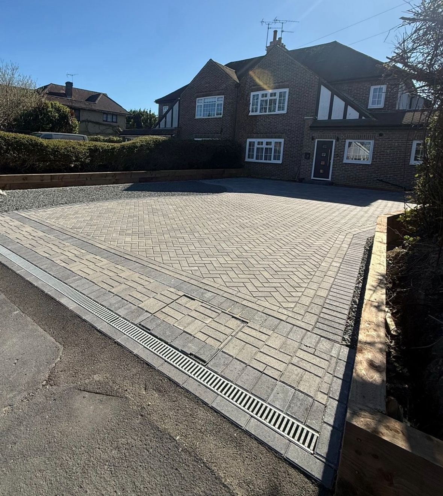

See the transformation.
Every A Sterling Landscapes project begins with a vision — and ends with a result that exceeds expectations. Our before and after gallery captures the full scope of change, from untouched sites and tired gardens to stunning outdoor spaces built to the highest standard.






Every project starts with a conversation. Whether you have a clear vision or need expert guidance, we're here to bring your outdoor space to life.